Multicast, broadcast, and multiple kernels in a single compute tile#
Goals#
Explore dataflow communication between neighboring and non-neighboring compute tiles
Understand the multicast and broadcast capabilities of the NPU array
Learn about running multiple kernels in one AI Engine compute tile
Understand the performance implications of different ways of moving data
References#
Multicast Data Using the Data Movers#
A new color detection application will be used to demonstrate the multicast data movement capabilities of the NPU. This algorithm identifies those pixels in an input video stream whose color values fall within specified ranges and highlights them.
This is an example of what we refer to as a branched dataflow. Branch in this instance means that the same data is sent to multiple kernels. There are two such branches in the dataflow graph below. The first is at the output of the input buffer and the second is at the output of the rgb2hsv node.
In contrast to the earlier scaled color threshold application, where data was partitioned before being sent to individual kernels, this application dispatches the same data to multiple kernels. When executing the application, you will be able to specify the color ranges and see their effects.
The application has four kernels which will map to four kernels. Each kernel will be mapped to one compute tile.
rgb2hsv- convert RGB to hue-saturation-value (HSV) color formatinRange0- checks for pixels in the first hue rangeinRange1- checks for pixels in the second hue rangemask- pixels that fall outside the specified range are set to black, otherwise the pixel is not modified
HSV color space is used as the pixel HUE will be used to specify the color range for pixels.
From the dataflow graph, you can see the input data stream is multicast to the rgb2hsv and the mask kernels. The output HSV data from rgb2hsv is also multicast and streamed to the two inRange kernels. Unlike in cached architectures where this multicast could lead into two independent copies, the NPU has dedicated hardware to handle broadcast efficiently via the network stream interconnect.
The NPU also has broadcast capabilities enabled via the network of stream interconnect.
In the image below you can see the result of the color detection algorithm for a particular set of range values.
Run the application#
from npu.lib import ColorDetectVideoProcessing
app = ColorDetectVideoProcessing()
app.start()
Dataflow Mapping#
You can see that due to branching, we have three paths in the dataflow diagram which converge on the mask kernel node. This node has three inputs. To maximize performance, we need to provide all three input data streams to this node simultaneously. Given that this design will use a single column of the array, regardless of how we map the kernels, only two tiles can use nearest neighbor connectivity. Some tiles will need to transfer data to non-neighboring tiles. This example will use a combination of data movers and the streaming interconnect, and also nearest neighbor data memory sharing.
In the animations below, we show one way the application can be mapped to the array. The data movement will be broken down into smaller steps before the final version of the application mapping is shown.
| Step 1 | Step 2 | Step 3 |

|
||
| Step 1 | Step 2 | Step 3 |
Step 1
the interface tile moves a column of data from system memory to the data memory in the memory tile.
Step 2
in the memory tile, data movers will multicast the input stream to both the
rgb2hsvkernel (orange, in the top compute tile) andmaskkernel (dark orange, in the bottom compute tile). One data mover in the memory tile is used to send the data. Each compute tile uses a data mover to receive the stream. The stream switch in the bottom compute tile moves data (green) to the data memory in this tile and also sends the same data on the streaming interface to the north towards the top compute tile.
Step 3
once the
rgb2hsvkernel in the top compute tile has enough data in its input buffer it starts executing. It writes its results in its data memory (orange data buffer). This orange buffer is consumed by theinRange0kernel (blue) in the next compute tile. TheinRange0kernel can access the data it needs directly from the memory of the tile to the north. The output from thergb2hsvkernel (orange) is also pushed by the data movers via the streaming interconnect to theinRange1(pink) kernel.
| Step 4 | Step 5 | Step 6 |
|  |

|
|
| Step 4 | Step 5 | Step 6 |
Step 4
when both
inRangekernels have enough input data they start executing and producing data (blue and pink data buffers). The blue buffer is pushed by the data mover to the mask kernel (dark orange) using the stream interconnect. Meanwhile the pink buffer can be accessed via nearest-neighbor communication from the tile above.
Step 5
the
maskkernel can start processing, using the data generated by theinRangekernels. Its output buffer, dark orange, is then moved outside of the array via the interface tile.
Step 6
shows the animation for the full example.
NPU Resource Use#
In all, the application uses:
1 interface tile
2 data movers
1 for stream input and 1 for stream output
1 memory tile
1 input data buffer
3 data movers
1 for stream input from the interface tile
2 for stream outputs to the compute tiles
4 compute tiles
1 for each of the kernels
8 memory buffers
2 memory buffers at the top tile
input from interface tile and results data
1 memory buffers at the second to top tile
2 memory buffers at the third to top tile
multicast data from top tile and results
3 memory buffers at the bottom tile
input from interface tile, input from second-to-top tile and results data
5 data movers
1 for stream input at the top and bottom compute tiles bottom
1 for multicasting data at the top compute tile
1 for multicasting data at the second-to-top compute tile
1 for stream output at the bottom compute tile
Multiple Kernels in One Tile#
Both the dataflow graph and the animations are a simplification of the actual functionality. inRange and mask kernels are a combination of multiple kernels. We refer to this combination as a super kernel.
The inRange super kernel is a combination of two threshold kernels: one to check for pixel values greater than a threshold and another to check for pixel values less than a threshold.
The mask super kernel is a combination of three kernels:
bitwise_orbetween the outputs of theinRangesuper kernelsgray2rgbto create a color channel maskbitwise_andoperation is performed from the output of thegray2rgbkernel and the input image
Up to this point, we have assigned one kernel per compute tile. However, the color detection has eight different kernels. So, for this application, we need to map multiple kernels to a single tile.
The compute tile is capable of running multiple kernels, however the execution is sequential and one kernel cannot start until the previous finishes.
The benefit of having multiple kernels in a single tile is that the communication happens using a single buffer. There is no need for ping-pong buffer.
The animation below shows an example of multiple kernels running in one tile. The orange kernel produces data in the orange buffer. This in turn is consumed by the yellow kernel that produces the yellow data.

Load Balancing#
In a case where there are more kernels (nodes in the dataflow graph) than physical compute tiles, the designer needs to decide how to map multiple kernels into a single tile.
Naturally, some kernels can take more time than others. Hence, the idea of load balancing is to distribute the kernels to the compute tiles such that the maximum performance is achieved.
In dataflow applications, the slowest kernel dictates the maximum performance that such an application can achieve.
As a designer, you need to profile the different kernels and then combine them in such a way that each compute tile takes roughly the same amount of time to complete the computation.
The color detection application has been designed and mapped in such a way that each compute tile performs approximately the same amount of compute.
Next Steps#
In section 4 you will learn how to write your own kernels as well as the connectivity graph between tiles.